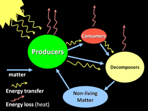

Ecosystems may be observed in many possible ways, so there is no one set of components that make up ecosystems. However, all ecosystems must include both biotic and abiotic components, their interactions, and some source of energy. The simplest (and least representative) of ecosystems might therefore contain just a single living plant (biotic component) within a small terrarium exposed to light to which a water solution containing essential nutrients for plant growth has been added (abiotic environment). By definition, ecosystems use energy and cycle matter, and these processes also define the basic ecosystem functions. As always, energy does not cycle, so ecosystems require a continuous flow of high-quality energy to maintain their structure and function. For this reason, all ecosystems are "open systems" requiring a net flow of energy to persist over time - without the sun, the biosphere would soon run out of energy!
ECO system components
At a basic functional level, ecosystems generally contain primary producers capable of harvesting energy from the sun by photosynthesis and of using this energy to convert carbon dioxide and other inorganic chemicals into the organic building blocks of life. Consumers feed on this captured energy, and decomposers not only feed on this energy, but also break organic matter back into its inorganic constituents, which can be used again by producers.